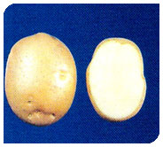
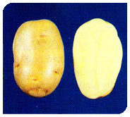
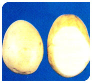
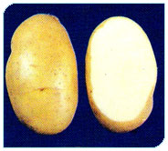
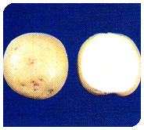
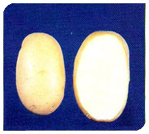

| TABLE POTATO and POTATO SEED | Characteristic | Picture |
|---|---|---|
| 1.Kufri Jyoti | Easy to cook, texture waxy, mild flavor, occasional discoloration after cooking. Suitable for instant flakes and chips. Also suitable for exports. |  |
| 2.Kufri Pukhraj (C-166) | Easy to cook, waxy texture, mild flavor, free from discoloration after cooking. Not suitable for processing. |  |
| 3.Kufri Badshah | Easy to cook, floury texture, mild flavor, free from discoloration after cooking. Not suitable for processing. |  |
| 4.Kufri Chandermukhi | Easy to cook, floury texture, mild flavor, free from discoloration after cooking. Not suitable for processing. |  |
| 5.Kufri Lauvkar | Easy to cook, floury texture, mild flavor, free from discoloration after cooking. Not suitable for processing but suitable for export. |  |
| 6.Kufri Chipsona-I | Easy to cook, waxy texture, mild flavor, free from discoloration after cooking. Due to high dry matter, low reducing sugars and low phenols, the variety is highly suitable for making chips and French fries. |  |